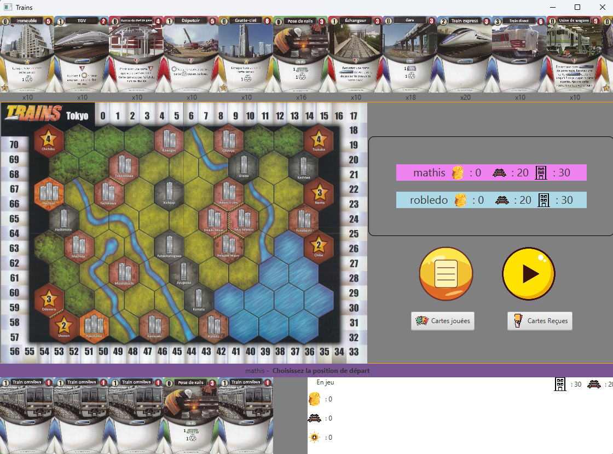

Jeu "Train" Numérique
2023
Équipe de 2
Architecture MVC
JavaFX
Description
Adaptation numérique d'un jeu de société de stratégie ferroviaire développée en
Java avec JavaFX. Le projet met en œuvre une architecture MVC complète avec une
interface graphique interactive. Les joueurs posent des rails, construisent des connexions
entre villes et marquent des points en complétant des trajets. Réalisé en binôme en suivant
une méthodologie de développement itérative avec tests unitaires JUnit.
Technologies utilisées
Java 17
JavaFX 20
Maven
Pattern MVC
JUnit 5
FXML
Points clés du projet
🎮 Jeu Complet
Système de tours, plateau interactif, gestion des scores en temps réel
🏗️ Architecture MVC
Séparation stricte Modèle / Vue / Contrôleur pour la maintenabilité
🖼️ Interface JavaFX
UI fluide et intuitive en FXML, animations et transitions CSS
👥 Multijoueur local
Tour par tour, jusqu'à 4 joueurs simultanément
🧪 Tests JUnit
Couverture de la logique de jeu par des tests unitaires
📦 Build Maven
Gestion des dépendances et cycle de build automatisé